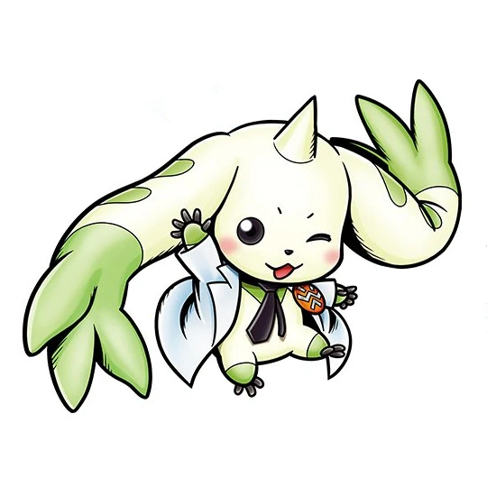

TERRIERMON EL ESTOICO
El estoicismo es una antigua filosofía que promueve la virtud, la autodisciplina y la serenidad en medio de las adversidades. Aunque pueda parecer inusual, podemos encontrar valiosas lecciones estoicas en los personajes de la popular serie de anime Digimon Tamers, especialmente en Terriermon y su Tamer, Henry Wong.
Terriermon es un Digimon cuyo lema, "Momantai", se ha vuelto icónico en la serie. Esta expresión, que se traduce como "No te preocupes" o "Todo está bien", refleja la actitud estoica de Terriermon frente a los desafíos. El estoicismo nos enseña a aceptar lo que no podemos cambiar y a mantener la calma en situaciones difíciles. Terriermon personifica esta actitud, ya que enfrenta a enemigos poderosos con determinación y confianza en sus habilidades, sin dejarse abrumar por el miedo.
Por otro lado, Henry Wong, el Tamer de Terriermon, representa la autodisciplina y el autocontrol, dos valores fundamentales en el estoicismo. A lo largo de la serie, Henry aprende a controlar sus emociones y a tomar decisiones basadas en la razón en lugar de dejarse llevar por impulsos emocionales. Este proceso de autodisciplina es una parte central de la filosofía estoica, que nos anima a dominar nuestras pasiones y a actuar con sabiduría en lugar de reaccionar impulsivamente a las circunstancias.
En el mundo de Digimon Tamers, los personajes enfrentan desafíos constantes y a menudo se ven obligados a tomar decisiones difíciles. La combinación de la actitud estoica de Terriermon y la autodisciplina de Henry los ayuda a sobrellevar estas pruebas. A través de su relación y sus aventuras, nos recuerdan la importancia de mantener la calma en medio de la tormenta y de actuar con sabiduría y autodisciplina.
El estoicismo, con su énfasis en la virtud, el autocontrol y la aceptación de lo que no se puede cambiar, encuentra un eco en las lecciones transmitidas por Terriermon y Henry en Digimon Tamers. A medida que enfrentan desafíos en el mundo digital, nos muestran cómo la filosofía estoica puede ser una guía valiosa para navegar por las dificultades de la vida real. La frase de Terriermon, "Momantai", se convierte en un recordatorio constante de que, al abrazar los principios estoicos, podemos encontrar la serenidad en medio del caos y la fortaleza en medio de la adversidad.
A medida que Terriermon y Henry avanzan en sus aventuras, se enfrentan a enemigos cada vez más poderosos y a desafíos que pondrían a prueba a cualquiera. Sin embargo, su determinación y la aplicación de los principios estoicos les permiten superar obstáculos aparentemente insuperables. Henry, en particular, evoluciona a lo largo de la serie, pasando de ser un niño inseguro a convertirse en un líder valiente y sabio. Su capacidad para enfrentar situaciones difíciles con calma y autodisciplina es un testimonio del poder de la filosofía estoica en la vida cotidiana.
En última instancia, la relación entre Terriermon y Henry en Digimon Tamers nos enseña que el estoicismo no es simplemente una filosofía abstracta, sino un conjunto de principios prácticos que pueden aplicarse en la vida diaria. Al abrazar la virtud, la autodisciplina y la aceptación de lo incontrolable, podemos encontrar un mayor sentido de paz y equilibrio en nuestras vidas, incluso en medio de las dificultades. La famosa frase de Terriermon, "Momantai", se convierte en un recordatorio constante de que, al seguir los principios estoicos, podemos vivir con más serenidad y fortaleza.
En conclusión, el estoicismo es una filosofía que se puede encontrar en los lugares más inesperados, incluso en la animación japonesa. Los personajes de Terriermon y Henry en Digimon Tamers encarnan principios estoicos como la autodisciplina, la serenidad y la virtud, y nos muestran cómo aplicarlos en nuestras vidas cotidianas. Su lema, "Momantai", nos recuerda que, al abrazar la filosofía estoica, podemos enfrentar los desafíos de la vida con confianza y sabiduría, convirtiéndonos en mejores personas en el proceso.